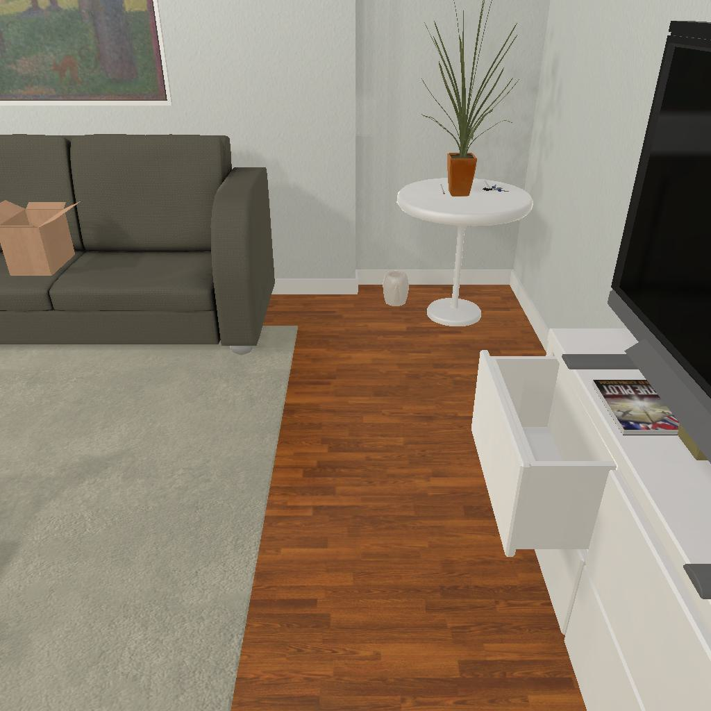

---------------------------------------------------------task: 5---------------------------------------------------------
--------------------------------------------------------------------------------------------------------------------------------------------------------------------
--------------------------------------------------------------------------------------------------------------------------------------------------------------------
Step:--------------------------------------------------------------------------9-------------------------------------------------------------------------------
----------------------------------------
VLM Prompt:
Image1:
Image2:
Image3:
**Instruction**
1. Analyze the provided images to identify all visible household objects and compare the difference between images (e.h. whether the object is opened or not and taken on hand or not), focusing on those relevant to the task description "put a book in armchair."
2. Use the analysis of images and the task hint "The agent must find an object of the desired type, pick it up, find the correct location to place it, and put it down there." to answer the question: what is the most reasonable action in the choices for the task description "put a book in armchair"?
3. Decide and write the answer using the template: The answer is: (i): , where i is the real number. If there is no desired object in images, search every place based on **Initial Observation** to find the object. And if no one is exactly correct, choose a similar answer.
**Initial Observation**
You are in the middle of a room. Looking quickly around you, you can see armchair (1), sofa (1), coffeetable (1), drawer (1-4), sidetable (1-3), dresser (1)
**Answer Choices**
(1): go to armchair 1
(2): go to sofa 1
(3): go to coffeetable 1
(4): go to drawer 1
(5): go to sidetable 1
(6): go to dresser 1
(7): go to drawer 4
(8): go to sidetable 2
(9): go to sidetable 3
(10): open drawer 3
(11): close drawer 3
(12): examine drawer 3
**Answer**
Let's think step by step by following the instructions.
----------------------------------------
----------------------------------------
Original Response:
First, we analyze the provided images to identify all visible household objects. We can see an armchair, a sofa, a coffee table, a side table with a plant on it, and a part of a drawer or dresser. There are no visible books in any of the images.
Next, we consider the task description "put a book in armchair" and the task hint. The agent must find a book, pick it up, find the armchair, and place the book there.
Based on the initial observation, we know there is an armchair, a sofa, a coffee table, drawers, side tables, and a dresser in the room. Since there are no books visible in the images, the agent needs to search for a book. The most reasonable places to search for a book would be in drawers or a dresser, as books are commonly stored in these types of furniture.
The answer choices provided include actions related to going to different pieces of furniture or examining a drawer. Since we need to find a book, the most reasonable action would be to search in a drawer or dresser, as these are likely places for a book to be stored.
The answer is: (4): go to drawer 1. If no book is found there, the agent should continue searching in the other drawers or the dresser.
----------------------------------------
----------------------------------------
>>> Refine Original VLM Response and Get Pure Action: go to drawer 1
----------------------------------------
-----------------------------------------------------------------
Running time: 15.073990821838379 seconds
Total Money: 2.22121
-----------------------------------------------------------------
-----------------------------------------------------------------
Text Observation:You arrive at loc 3. The drawer 1 is open. On the drawer 1, you see a houseplant 1, a television 1, a box 1, a book 1, a wateringcan 1, a keychain 1, a pencil 1, and a pencil 2.
-----------------------------------------------------------------
UNSUCCEED